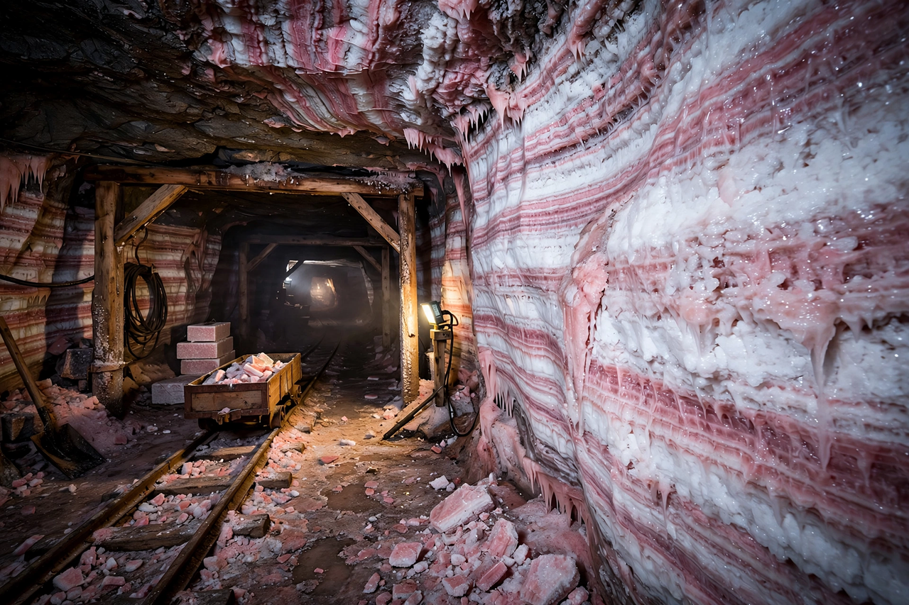

| Zechstein Group | |
|---|---|
 Zechstein salt strata underground | |
| Type | Geological group / sequence |
| Period | Lopingian (late Permian), ~259–254 Ma |
| Region | Northwest Europe: North Sea, Germany, Poland, Netherlands, northern England |
| Lithology | Evaporites (halite, anhydrite, potash salts), dolomite, shale |
| Named from | German miners' term: Zechstein, "mine stone" |
The Zechstein is a sequence of sedimentary and evaporite rocks of late Permian (Lopingian) age in northwest Europe, deposited in the Zechstein Sea, a shallow epicontinental sea that flooded the region about 259 million years ago. Stretching from northern England across the North Sea to Poland, the Zechstein is one of the world's great evaporite formations and was historically fundamental to the German mining industry.
Rapid marine transgression flooded a desert basin lying below sea level. Under an arid climate, restricted circulation led to repeated cycles of evaporation, recorded in up to seven major cycles (Z1–Z7) of carbonate, sulfate (anhydrite and gypsum), halite, and—where evaporation went furthest—bitter potash and magnesium salts. At the base lies the Kupferschiefer ("copper shale"), a thin, organic-rich marl famous for its fossil fish and its copper, silver, and lead ores, mined for centuries around Mansfeld.
Zechstein potash deposits at Staßfurt and elsewhere made Germany the world's leading potash producer in the nineteenth century and were the original source of the term "potash salts." The salt layers also form the seal for many North Sea and onshore natural-gas fields in the underlying Rotliegend sandstones, and their salt tectonics create traps for oil and gas. Salt caverns leached in Zechstein halite are used for gas storage.
In England the Zechstein crops out as the Magnesian Limestone of Durham and Yorkshire and is grouped in the Zechstein Group; offshore it is a principal component of the Southern Permian Basin fill.
Evaporite · Kupferschiefer · Potash · Anhydrite · Permian